Home › Research › Hands-on test
Hands-on test · run on 2026-10-01On 1 October 2026 we put Clonable on a fresh WordPress site and translated it into German on the free plan. Between 20:55 and 21:25 Amsterdam time we installed the plugin, built a clone, wrote a page, changed it, corrected a translation by hand and connected the plugin to the Clonable account. We checked every result on the live pages and in WordPress itself. One site, one evening, one language: a case study, not a verdict on every setup.
Clonable translated our WordPress test site into German without adding a single translated page to WordPress: the install still held three English pages afterwards, plus one plugin. A price we changed on the English page showed up in German within fifteen seconds. The bulk-correction tools are paid, and the free plan’s numbers inside the app do not match the public pricing page.AIBuilder Marketplace, hands-on test, 2026-10-01. Free to quote with attribution.
| Step | What we saw | Result |
|---|---|---|
| Scan | Typed the site address. About ten seconds later it had found WordPress, English (United States) and the installed plugins, sorted into Not supported, Has overlap, Supported and Unknown. It warned that the site sits behind Cloudflare, which can make detection less accurate. | worked |
| Language and context | Picked German (Germany). A formality setting appeared, left on “Same as original”. The context step offers an AI assistant (“Takes 5-10 minutes”) or a free text field; we wrote two sentences. | worked |
| Preview | “Preview first” needs no DNS change and no plugin. The preview was ready about two minutes after we started the build, under five minutes after we first typed the address. | worked |
| Translation | Our test page came back fully in German, menu included, in the formal “Sie”. The URL slug stayed English. WordPress’s own “Hello world” post came out informal, mirroring its casual original. | worked, with notes |
| Sync | We changed a price on the English page from 49 to 59 euros and saved at 21:04:46. The German page showed “59 Euro” on our first reload, at 21:05:01. | under 15 seconds |
| WordPress database | After cloning and syncing, WordPress still listed three pages, all English. The only thing added to the install was the Clonable plugin. | nothing added |
| Manual correction | The Clone editor opens the clone with a toolbar. We changed “Hallo Welt!” to “Hallo, Welt!”; it reported “Translation saved successfully” and the public preview showed the change on the next load. | worked on free |
| Bulk fixes | Translation Replacements and the Glossary show “Plan upgrade required” on the free plan. Translation exclusions are open. | paid only |
| Plugin connection | The plugin needs an API key from the Clonable dashboard. Once pasted, it reported “successfully connected” and synced the clone into WordPress. hreflang tags for x-default, en-us and de-de appeared in the head of both the English site and the German clone straight away. | worked |
| Language switcher | Ticking two boxes put a floating switcher on the English site; it opens to list both languages. Choosing German did not take us to the German page in our automated browser session, so we could not confirm the click-through. | not confirmed |
Clonable pitches itself against plugins such as WPML, so this is the part we wanted to see for ourselves. WPML’s documented model keeps translations inside WordPress: each translated post, page or term is stored in the WordPress database as its own item, linked to the original through WPML’s own tables, and someone has to keep those copies current when the original changes.
Clonable works the other way round. After we had cloned the site, written a page, changed it and corrected a translation, the Pages screen in WordPress still showed the same three pages, all in English. Nothing had been duplicated, and the only addition to the install was the Clonable plugin. The German site is assembled outside WordPress, on Clonable’s servers, from the English pages as they are at that moment. That is why our price change reached the German page in under fifteen seconds without anyone touching a translation.
The trade-off is just as real, and Clonable says so itself. Its setup guide warns that “all clone traffic passes through our servers” and asks you to whitelist its IP addresses so your host does not block it. Your German site is only up while Clonable is, and only while you keep paying. Because the translations do not live in WordPress, anything that reads the database, such as site search or emails, needs the plugin’s extra modules; the plugin offers tabs for WooCommerce, multi-currency, email translations and a multilingual search marked beta, none of which we tested.
Connecting the plugin is what makes the clone visible to search engines as a language version. Within seconds of pasting the API key, the head of both the English site and the German clone carried hreflang tags for x-default, en-us and de-de, pointing at each other. The preview itself is marked “Not indexed” until you finish the setup guide, which ends with “Allow indexing by search engines”. Our page address stayed English in German (/wordpress-maintenance-plans/). URL translation is a separate feature, and the plugin warns that switching on translated URLs in the language tags “does not mean your URLs are actually translated”.
The German was good: the formal “Sie” throughout our page, the prices and units intact, the list structure kept. Where you want different wording, the Clone editor lets you click any text on the German page and rewrite it; we did that on the free plan and the change was live on the next load. What the free plan does not include are the tools you would use to fix a word everywhere at once: Translation Replacements and the Glossary both ask for an upgrade.
Inside the app the free account showed “Translated pages 0 / 25” and “Clones 1 / 1”, and the counter still read 0 after our clone had translated several pages. The plan picker inside the app and the public pricing page, both read on 1 October 2026, do not describe the same plans:
| Plan | Public pricing page | Plan picker inside the app |
|---|---|---|
| Free | €0, 1 clone, up to 20 translated pages; 50 pages for €25 a month | Free plan, 25 translated pages, 1 clone; a Starter plan at €25 a month for 50 pages |
| Business | €49 a month, 3 clones, 400 pages | €49 a month, 1 clone, 400 pages, marked Recommended |
| Pro | €79 a month, 5 clones, 1,200 pages, marked Recommended | €79 a month, 1 clone, 1,200 pages |
| Expert | €249 a month, 10 clones, 5,000 pages | €249 a month, 1 clone, 5,000 pages |
| Premium | €999 a month, 20 clones, 50,000 pages | €999 a month, 1 clone, 50,000 pages |
The public page has a monthly/annual switch and opens on the annual setting; the app showed the same euro amounts. Until the two agree, take the clone count from your checkout rather than from either page. The same app screen listed its add-ons with the line “Your new subscription price will be € -0,01 per month”, which looks like a display bug.
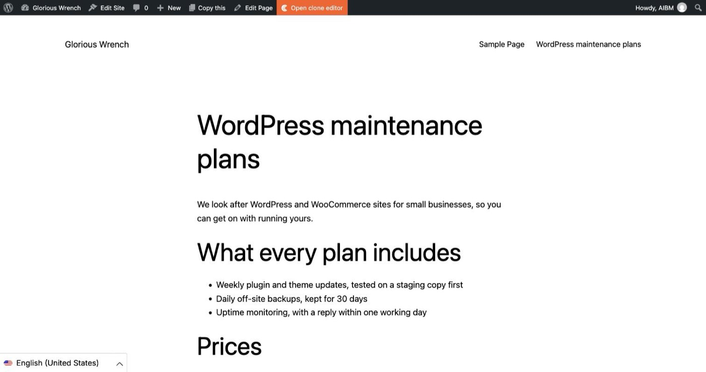
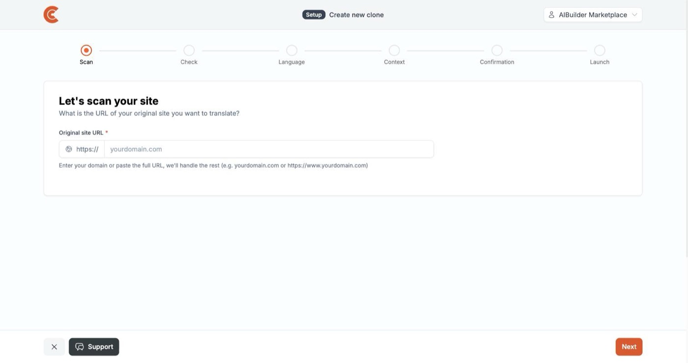
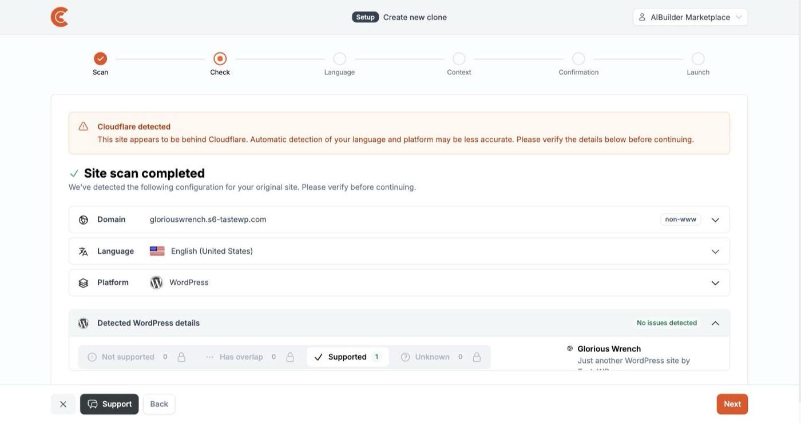
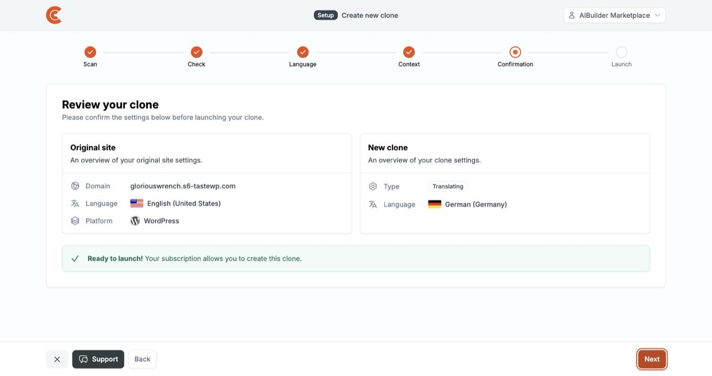
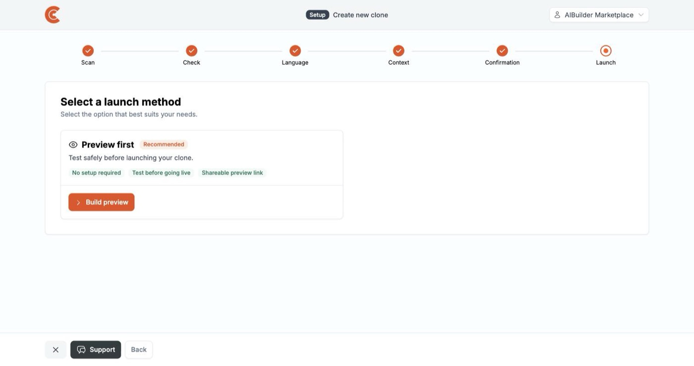
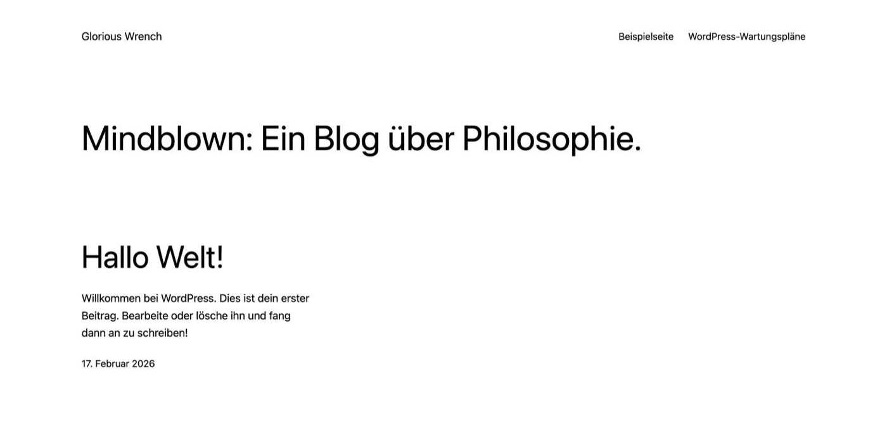
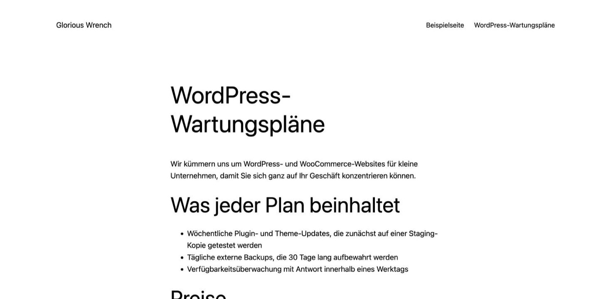
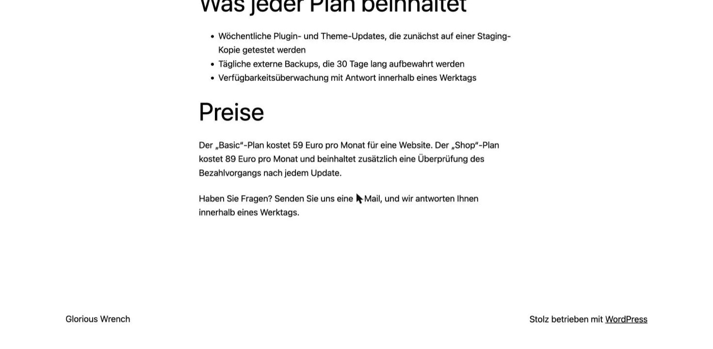
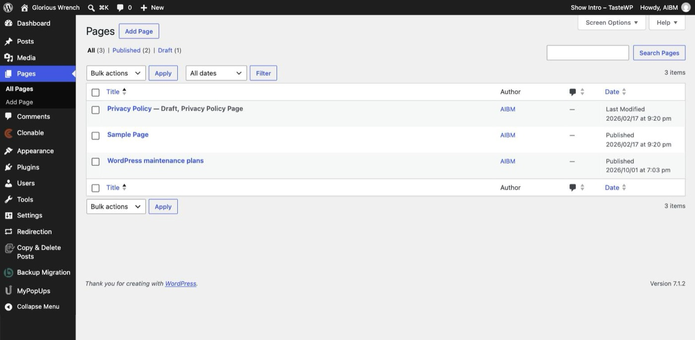
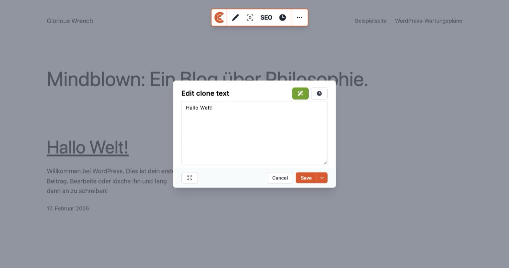
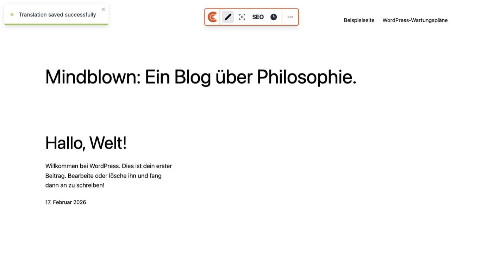
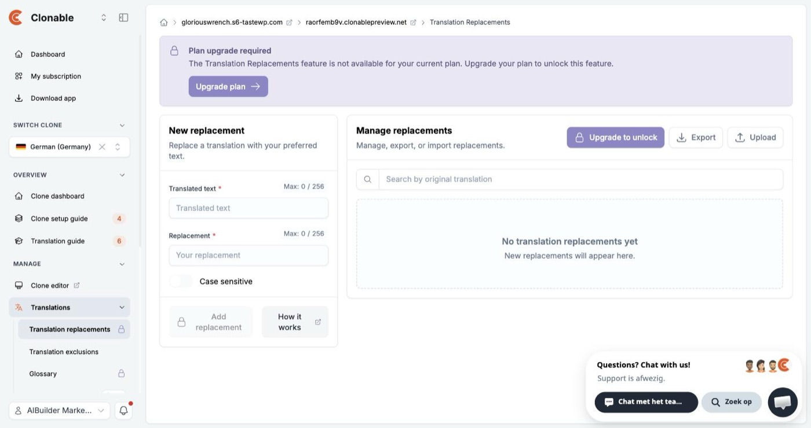
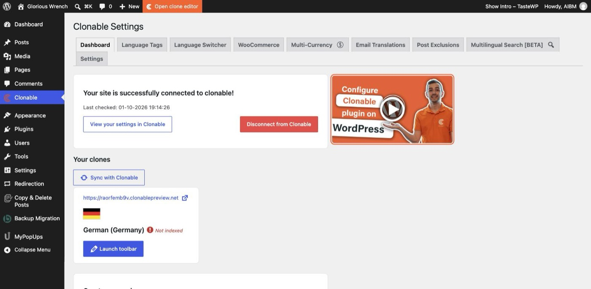
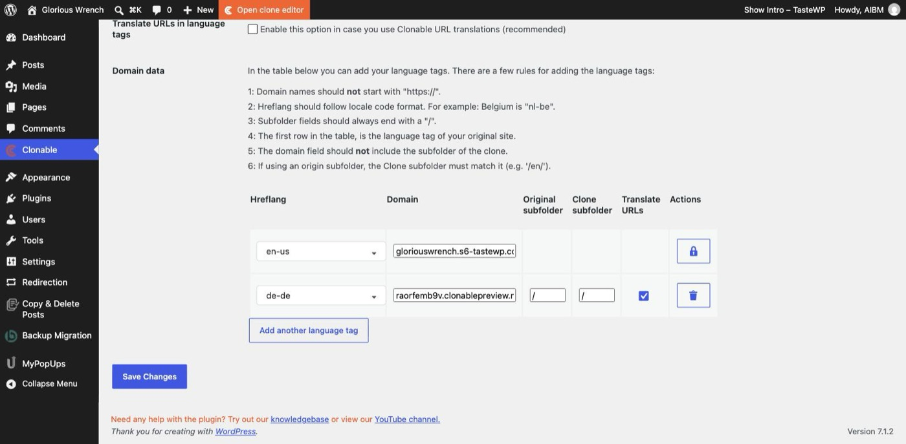
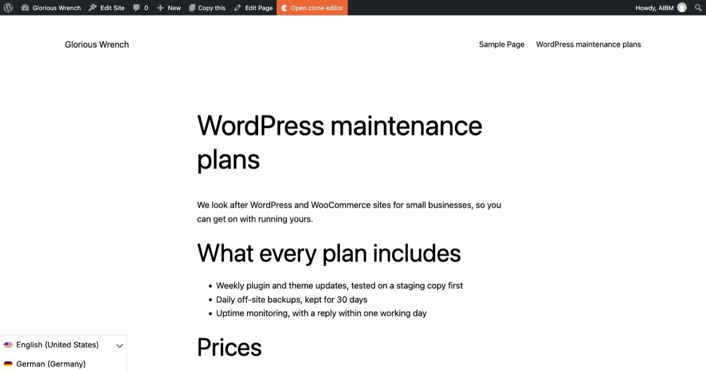
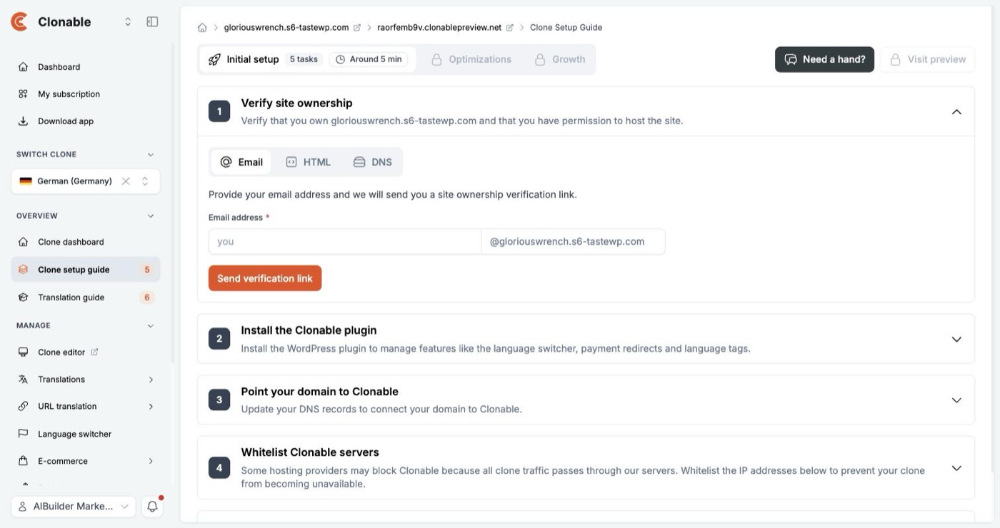
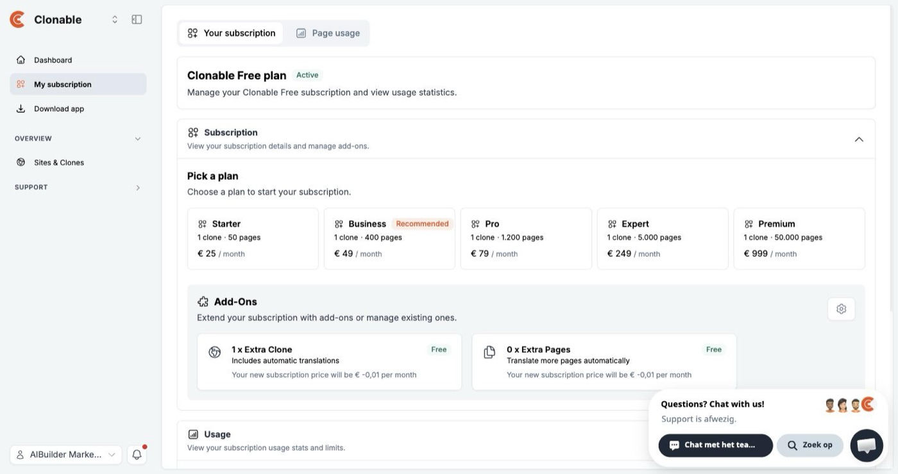
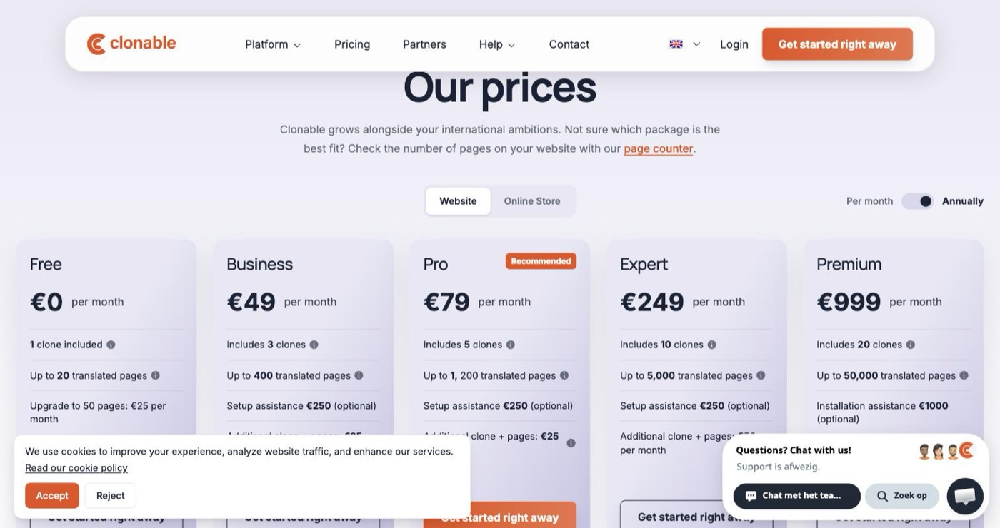
Our full review: Clonable. Our other hands-on tests: Active Intelligence 3.0 on a new ActiveCampaign account · one pitch deck, four AI presentation tools · one booking app, three AI builders. How we separate researched reviews from hands-on ones: how we review.
AIBuilder Marketplace, “Clonable on WordPress: a German clone in under five minutes”, hands-on test run on 2026-10-01. Free to quote and reproduce with attribution (CC BY 4.0).